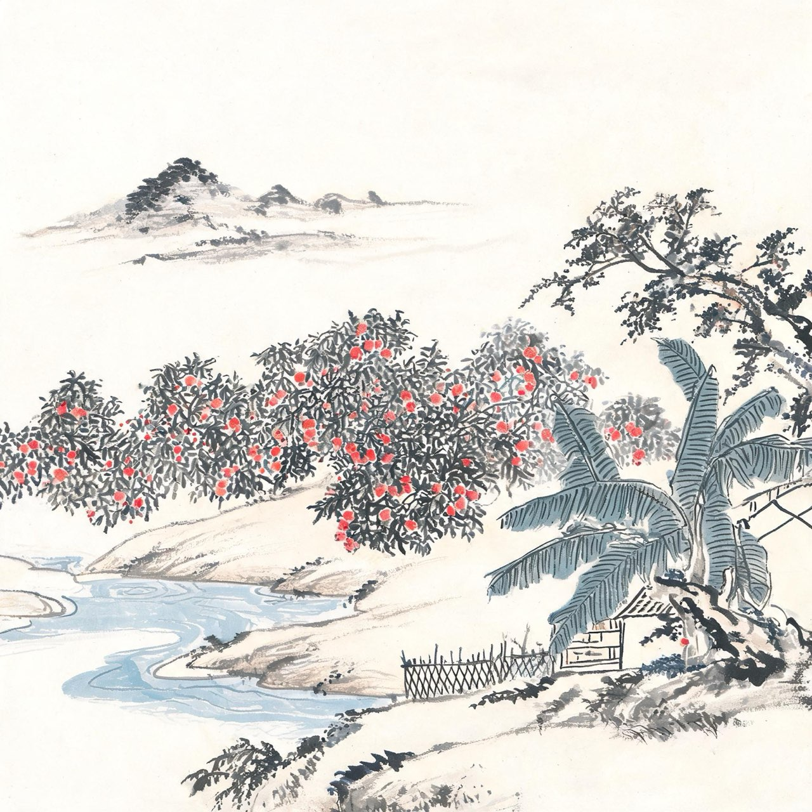
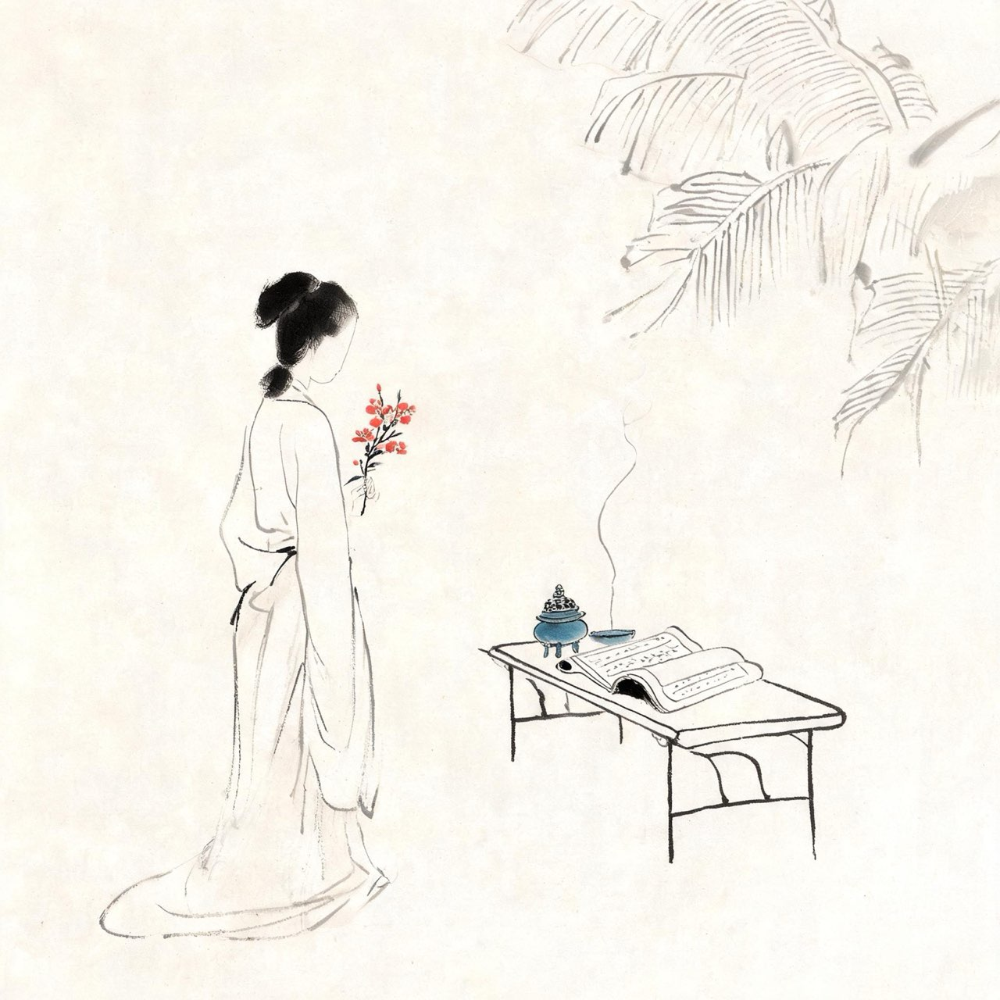
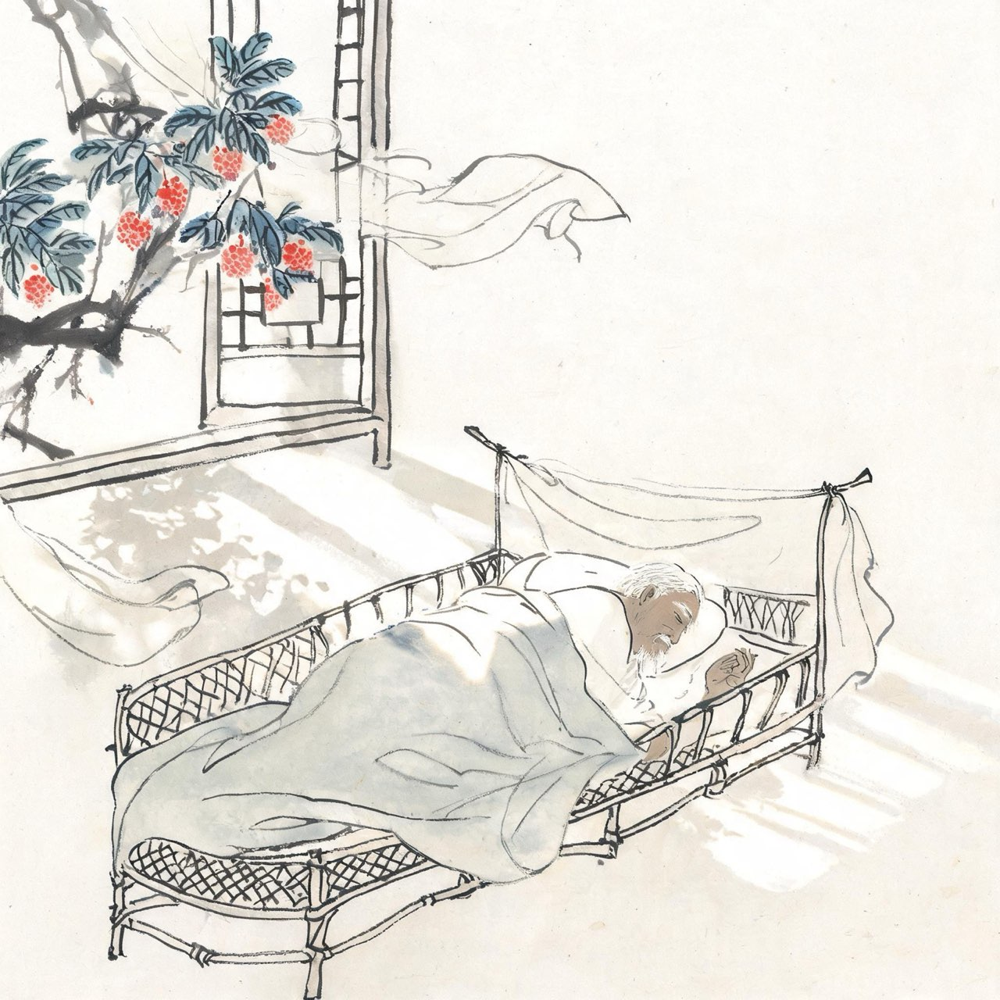
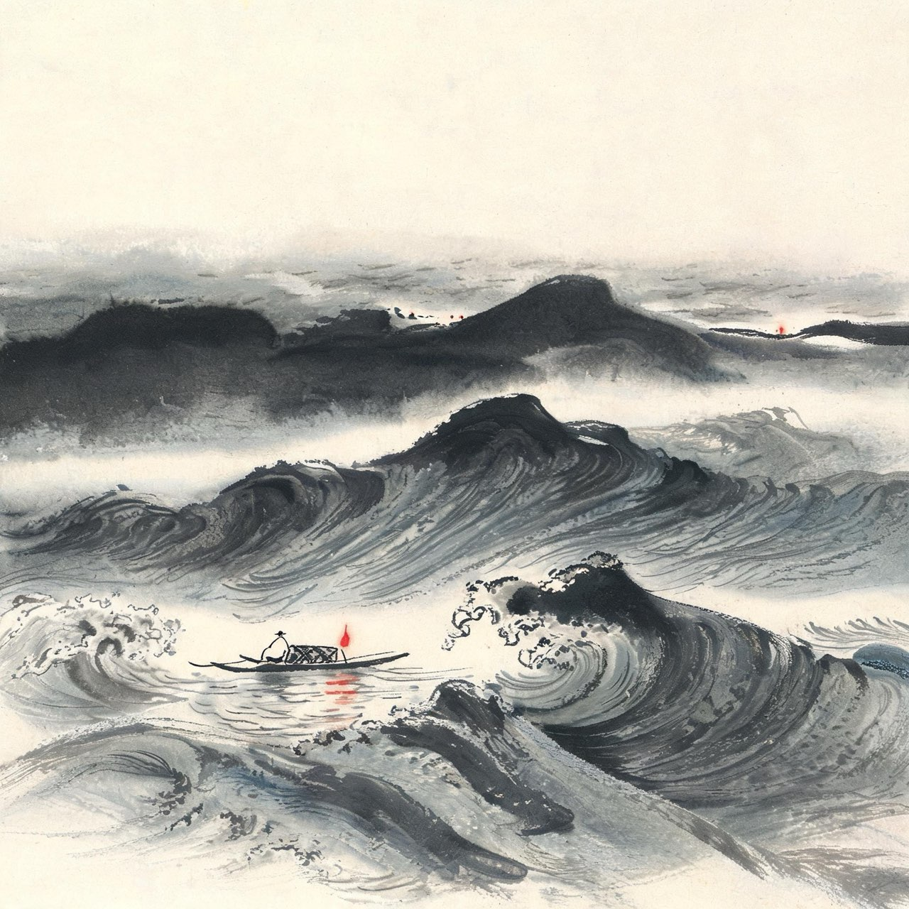
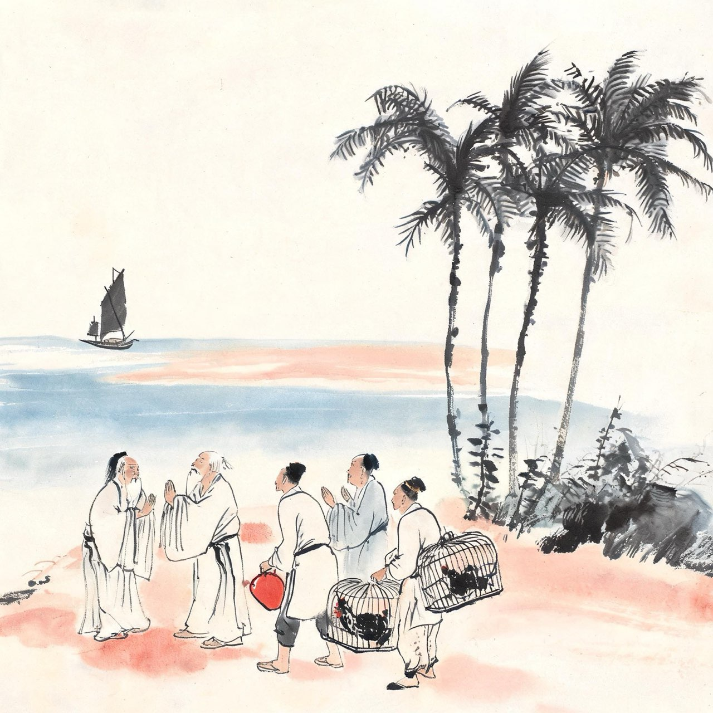

苏轼 · 1094-1100
岭海
九死南荒
一贬再贬
绍圣元年，五十七岁的苏轼从定州出发，往英州赴任。
贬命在路上追着他跑：先降官一级，再降一级，未到英州，第三道诏书到了——撤去一切官阶，责授宁远军节度副使，惠州安置。
节度副使是虚衔，安置是流放的官方说法。这和当年的黄州一模一样，只是更远、更南、更老。
路上他给弟弟写信，语气平静得让人心疼：兄弟俩一生以不合时宜而屡贬，如今都已习惯。
家眷遣散各处投靠，只有小儿子苏过和侍妾朝云，随他南下。
注
- 绍圣元年途中三改谪命，最终宁远军节度副使惠州安置

初到惠州
十月，苏轼到惠州。
岭南在宋人眼里是瘴疠之地，贬谪到此近乎宣判。但苏轼看这里：罗浮山下四时春，卢橘杨梅次第新。
惠州官民待他不薄——太守詹范敬他是名士，时常送酒送肉；左近的僧道友人与他往来唱和。他在白鹤峰下买地筑屋，打算真在这里终老。
人到了绝地，只要心肯安，绝地也能成家。
注
- 安心即是家语意化用其诗其文，原句待校
惠州一绝
罗浮山下四时春，卢橘杨梅次第新。
日啖荔枝三百颗，不辞长作岭南人。
注
- 荔枝之嗜在惠州诸作中屡见；一贬所之人以口福化解放逐，正是苏轼本色

朝云
说起随行南下的朝云，有一段著名的对话。
某日苏轼饭后扪腹徐行，问身边侍儿：你们说，我这里面装的是什么？有人说满腹文章，有人说满腹见识。朝云答：学士一肚皮不合时宜。
苏轼捧腹大笑。满朝上下，懂他的，只有这个杭州歌舞班出身、跟他从黄州到惠州的女人。
到惠州时朝云已随他近二十年，从少女到中年，名分仍是侍妾，情分早已是患难夫妻。
注
- 一肚皮不合时宜：出自《梁溪漫志》，宋人笔记，细节待校
事件·朝云之殇
绍圣三年七月，惠州瘟疫，朝云病逝，年三十四。
她生前学佛，临终诵金刚经四句偈：一切有为法，如梦幻泡影，如露亦如电，应作如是观。
苏轼将她葬在惠州西湖孤山，筑亭纪念，亭名六如——取偈中如梦幻泡影、如露亦如电六喻。此后苏轼不再听人唱蝶恋花——那阕枝上柳绵吹又少，天涯何处无芳草，是朝云生前每唱必哭的词。
从此，天涯路上再无知他冷热的人。
注
- 朝云诵偈与停唱蝶恋花事见宋人笔记，细节待校
- 六如亭至今存于惠州西湖

春睡美
惠州岁月的后期，苏轼的日子过得竟渐渐有了滋味。
白鹤峰新居落成，邻里有酒，罗浮有泉。他写诗自况：白头萧散满霜风，小阁藤床寄病容。报道先生春睡美，道人轻打五更钟。
一个被贬到岭南的老人，说自己睡得很好，请打更的道人轻一点。
这首诗传到了汴京。
注
- 此诗作年一说绍圣二年，取惠州后期意
事件·章惇的报复
春睡美三字，传到宰相章惇眼里。
当年绝壁上题字的旧友，如今是执掌天下生杀的新党宰相。他看到的是：苏子瞻在贬所过得还挺快活？
一纸诏书再下：责授琼州别驾，昌化军安置——海南岛，儋州。
宋代贬海南，是仅次于死刑的处置。据说章惇取苏轼字子瞻的瞻字，谐音儋；苏辙字子由，贬雷州，由对雷；黄庭坚字鲁直，贬宜州，直对宜——以名字配贬所，恶毒得近乎游戏。
传说细节难考，恶意是真的。
注
- 章惇以名字配贬所之说见宋人笔记，属传说层，待校

渡海
绍圣四年四月，苏轼动身赴儋州。
他自知此去凶险。南下途中与苏辙在藤州相见，兄弟同行至雷州——这是平生最后一次相聚。六月十一日夜，海边作别，苏轼渡海。
六十二岁，渡琼州海峡。风浪里回望大陆，灯火渐远。
他登岛后写：某垂老投荒，无复生还之望——昨天与长子迈诀别，已安排好后事。今到海南，首当作棺，次便作墓。
这不是夸张。当时贬儋的大臣，几乎没有活着回来的。
注
- 与王敏仲书自述垂老投荒无复生还之望、首当作棺次便作墓，文字待校
- 兄弟藤州、雷州相会的细节以年谱为准
儋州·六无之叹
儋州的生活，苏轼在给朋友程秀才的信里写得坦白：
此间食无肉，病无药，居无室，出无友，冬无炭，夏无寒泉。然亦未易悉数，大率皆无耳。惟有一幸，无甚瘴也。
六个无字，写尽海南。但他笔锋一转：
尚有此身付与造物者，听其运转，流行坎止，无不可者。
把这副身子交给造化，它要怎样便怎样，水往低处流，遇平则平，遇坎则坎——都好。
一个六十二岁的流放者，在世界的尽头，写下了最松弛的文字。
载酒堂讲学
苦日子过出了滋味。苏轼在儋州住下后，当地士人与百姓渐渐聚拢过来。
军使张中敬他，常请他喝酒；秀才姜唐佐从琼州渡海来求学，苏轼教他作文，赠他一句：沧海何曾断地脉——海南与中原文脉，隔海不断。
他在载酒堂讲学明道，四方之士闻风而至。宋代海南人文寥落，从无中举者。苏轼来后百余年间，海南出了举人、出了进士。后人尊他为海南文化的开拓者。
贬谪之地，成了他最后的讲坛。
注
- 载酒堂为东坡书院前身；姜唐佐后中举，苏辙为其补足苏轼所赠诗联
- 沧海何曾断地脉：苏轼赠姜唐佐句，全诗由苏辙续成，成一段文坛佳话
事件·著述以终老
儋州岁月，苏轼完成了平生最重要的学术著作：《易传》《书传》《论语说》。
他写信告诉朋友：抚视《易》《书》《论语》三书，即觉此生不虚过。
政治上一败涂地的人，在学术里为自己立了不朽的碑。
他说了句轻描淡写又掷地有声的话：了却此愿，死不恨矣。
注
- 三书于儋州修订完成，引文出处待校

遇赦
元符三年正月，哲宗驾崩，年二十四，无嗣。徽宗即位，向太后听政，贬臣陆续内迁。
五月，苏轼量移廉州；随后复官，准许北归。
消息传到海南，儋州父老依依难舍。他渡海北归，没有怨气，反而像完成了一场壮游——写下了平生最后一批好诗里的最豁然一首。
那首诗，是给这场横跨三州的放逐，盖棺定论的总结。
六月二十日夜渡海
参横斗转欲三更，苦雨终风也解晴。
云散月明谁点缀，天容海色本澄清。
空余鲁叟乘桴意，粗识轩辕奏乐声。
九死南荒吾不恨，兹游奇绝冠平生。
注
- 乘桴：用论语道不行，乘桴浮于海典；苦雨终风喻贬谪磨难
- 把九死南荒说成兹游奇绝——千古贬谪诗中，唯此一副胸怀